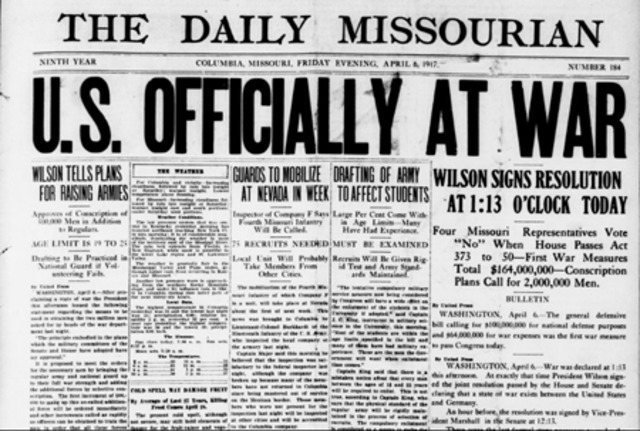
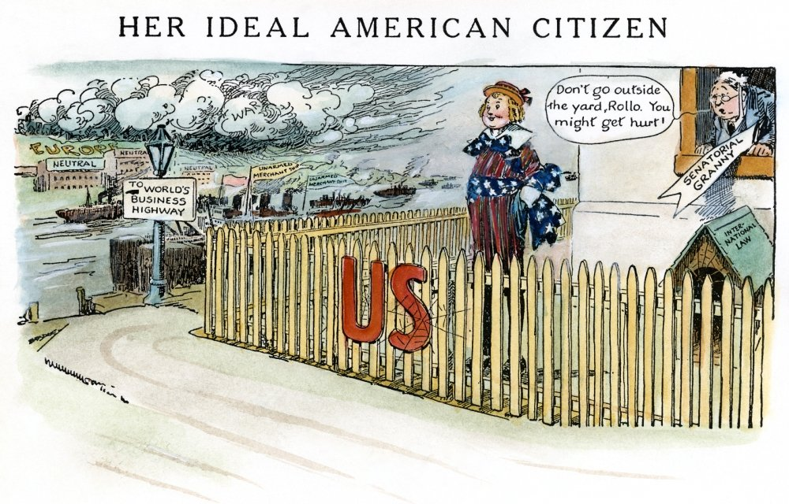

What resulted from US involvement in WWI?
- The Allied Powers were victorious
- The Treaty of Versailles was created, creating Hitler's
Weimar Republic, whose collapse led to WWII
- President Woodrow Wilson’s League of Nations was created

|
Alternative Outcome?
- A negotiable armstice would have occurred or a Germany Victory
- World War II would not have occurred because Hitler’s Weimar
Republic would not have been created, so it would not have
collapsed leading to WWII

|